Je libo...
- Rasta copánky
- Francouzské copánky
- Úpravy dreadů
-
Volné termíny
- Henna
- Karetky
-
- Fotogalerie
- Ceník
- Kontakt
- Vzkazy
- Odkazy
Evanii - rasta copánky v Brně
Několik mých výtvorů s návody
Najdete tu návod na několik karetek, které jsou na upletení velmi jednoduché. Berte to však spíš jako námět a inspiraci než jako výzvu ke slepému kopírování vzorů, které jsem si ve většině případů sama vymyslela nebo odvodila. Tato technika je totiž velmi variabilní, proto doporučuji v případě zájmu zkoušet nové možnosti otáčení destiček a nejspíš budete sami překvapeni, co všechno může vzniknout.
-
Toto byla moje historicky první karetka tkaná na 5ti destičkách, výsledek nic moc, kupodivu to nedopadlo zase tak tragicky a dokonce došlo k drobnému pokusu o vzor…
Barvy zelená, červená, béžová
Směr otáčení Λ Λ Λ…

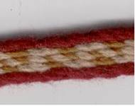 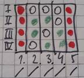 -
Můj druhý výtvor…náhodný pokus na 11ti destičkách, tentokrát jsem konečně ocenila systém číslování jednotlivých rohů karetky.
Barvy tm. zelená, červená, béžová
Směr otáčení Λ Λ Λ…


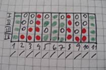 -
Toto je asi zatím nejpovedenější karetka z 15 destiček, kdy jsem zjistila, že nitě do destiček jdou navlékat i z opačného směru a proto struktura šipkového vzoru směřuje doprostřed a ne stále na jednu stranu jako u předchozí karetky.
Barvy sv. zelená, červená, tm. modrá, béžová
Směr otáčení Λ Λ Λ…
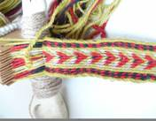 
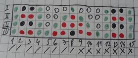 -
Karetka z jedenácti destiček
Barvy fialová, tm. hnědá
Směr otáčení Λ Λ Λ Λ Λ Λ
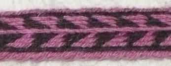 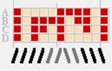 -
Karetka z devatenácti destiček
Barvy zelená, červená, béžová
Směr otáčení Λ Λ Λ V V V
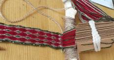 

-
Karetka z devíti destiček
Barvy červená, černá, bílá
Směr otáčení Λ Λ Λ Λ Λ Λ V V V V V V

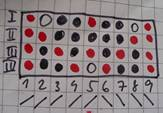 -
Karetka z jedenácti destiček, „vlnky“
Barvy černá, žlutá, hnědá
Směr otáčení Λ Λ Λ V V V
(Pletla jsem různé barevné varianty)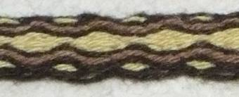 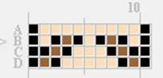 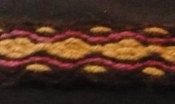 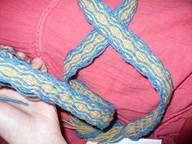 -
Karetka z devíti destiček, „vlnka“
Barvy fialová, zelená
Směr otáčení Λ Λ Λ Λ V V V V
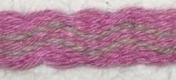 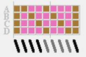 -
Karetka z devíti destiček
Barvy bílá, hnědá
Směr otáčení Λ Λ Λ Λ Λ Λ Λ Λ V V V V V V V V
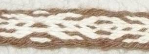 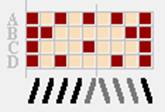